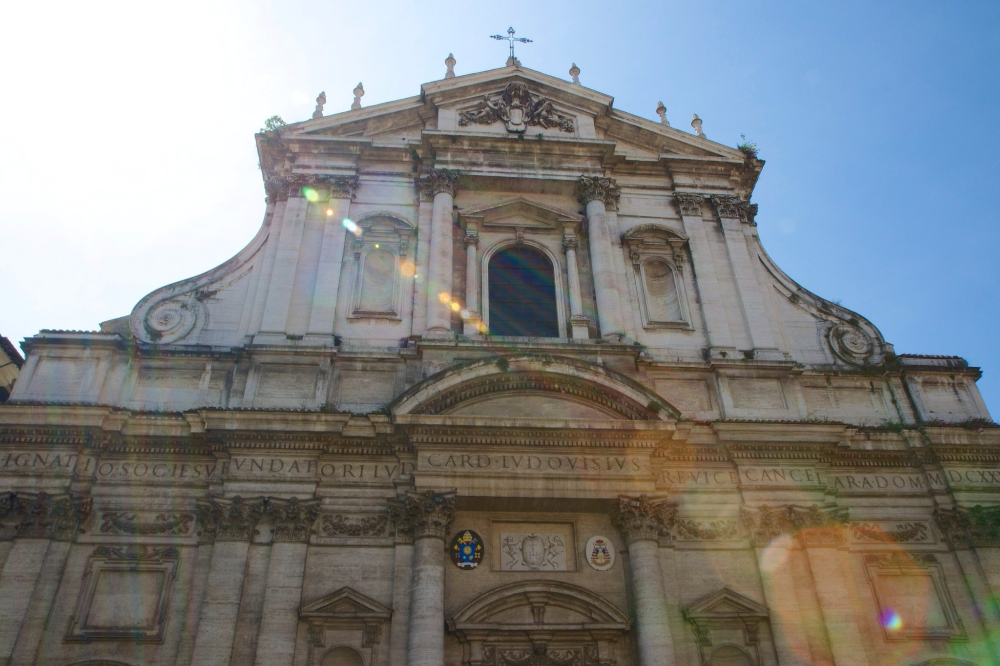

Mark Elster
Historic Reflections 5-1
The itinerary, day 5, part 1

With nothing to be gained from lingering, we depart the piazza determined to return one day for a more successful rendezvous with this iconic building—rushing back to Piazza del Popolo, we only barely managed to find mere moments to choke down surprisingly forgettable pizza (in Rome, no less!) before reconnecting with our tour group, and the next full measure of a very packed day—St. Peter's and the Vatican!
Rome
Standing slack–jawed craning our necks to gaze into the vaults far above us we stood for a moment transfixed—no doubt precisely the effect intended by the Jesuit architect and mathematician, Orazio Grassi. Soaring Corinthian pilasters ringing the nave and side aisles, the impossibly theatrical high altar—an explosion of colorful marbles—the many richly ornamented side altars, extensive gilding, and bold Tromp l’oeil paintings in the "dome" (never finished) at its crossing and bright frescoes in the nave ceiling together produce an overwhelming festive, sumptuous effect.
The Italian liberation celebrations disrupted our tour this day as well. On the one hand, the city was quieter because fewer people were at work or school, and on the other, sites were closed, streets blocked and routines disrupted. To top it off, it was also the day before the beatification of two catholic something–or–others, adding to the normal throng of tourists and pilgrims that normally congest the city, making for a veritable horde! Our indefatigable guides took it in stride — navigating around the blocked streets and closed sites and with few exceptions (see coliseum below) keeping us tourists blissfully unaware.

Our first principal stop was at the Circus Maximus, much the same as the coliseum, the site of staged public entertainments, like chariot races (Ben Hur's race in the movie was there, or more precisely a movie set like it) and when flooded, faux naval battle recreations along with gladiatorical combat*. Although the sacking of Rome by barbarians caused much damage, the city's monuments were largely destroyed by uncivilized remnants of the Roman people themselves (amazing how far they and other Europeans fell from grace — for a THOUSAND years!—there but for the grace of … you know the rest) the scale of the ruins were still stunning. We see some of them, including a distant peek–a-boo of the Forum at speed as the bus and tour guide rapidly wheel past them.
*Simone informed us that Hollywood got it wrong—the emperor didn't use thumbs up and down to render the fate of the vanquished—clenched fisted, he would swipe his outstretched thumb across his neck (as if slicing the throat) to condemn, or raise his outstretched arm with palm down to spare their life (essentially hailing their performance). It was this second gesture that was much later adopted by Hitler that may have led Hollywood to adopt the tamer gesture. He also shared his personal perspective of Italian governance—"How you say? Botched up!" Noting the rampant corruption and cronyism, and by way of example, that the Prime Minister of their tiny impoverished country, whose work is not that demanding, makes (as distinguished from "earns") €20,000 per month! Of course, to an American this doesn't sound like that much, depressingly indicating how we are treading down the same path (consider that in Washington, our self–labeled socialist US Representative, Jim McDermott, a "champion" of the poor, 'earns' approximately the same amount in salary and benefits, yet he has accomplished almost nothing legislatively in that office for 25 years, and previous ones for another 18 years).
*Simone informed us that Hollywood got it wrong—the emperor didn't use thumbs up and down to render the fate of the vanquished—clenched fisted, he would swipe his outstretched thumb across his neck (as if slicing the throat) to condemn, or raise his outstretched arm with palm down to spare their life (essentially hailing their performance). It was this second gesture that was much later adopted by Hitler that may have led Hollywood to adopt the tamer gesture. He also shared his personal perspective of Italian governance—"How you say? Botched up!" Noting the rampant corruption and cronyism, and by way of example, that the Prime Minister of their tiny impoverished country, whose work is not that demanding, makes (as distinguished from "earns") €20,000 per month! Of course, to an American this doesn't sound like that much, depressingly indicating how we are treading down the same path (consider that in Washington, our self–labeled socialist US Representative, Jim McDermott, a "champion" of the poor, 'earns' approximately the same amount in salary and benefits, yet he has accomplished almost nothing legislatively in that office for 25 years, and previous ones for another 18 years).

Fortunately, our next stop, the Piazza del Popolo, is largely intact (we never learned why the destruction was so uneven, although part of it has to do with the enormous spans of time that muddle the time frame of what you're looking at) and we are left on our own for two hours—plenty of time to see all the sights! It is rapidly apparent that Rome will also require a return visit.
The piazza is at the apex of three broad streets (by Roman standards), Via Della Scrofa, Via Del Corso and Via del Babuino, radiating south like spokes of a wheel. The immense piazza (almost as large as St. Peter's) was moderately packed with people of all stripes, including street performers (mimes, fakirs, and the like).
The piazza is at the apex of three broad streets (by Roman standards), Via Della Scrofa, Via Del Corso and Via del Babuino, radiating south like spokes of a wheel. The immense piazza (almost as large as St. Peter's) was moderately packed with people of all stripes, including street performers (mimes, fakirs, and the like).


The impressive frescoes by Andrea Pozzo celebrate the achievements (and myths) surrounding the life of St. Ignatius, the founder of the Jesuit branch of Catholicism. Pictures and words cannot do justice to the splendor of these amazing treasures.

Knowing we will return to this Piazza, after narrowly escaping through a gauntlet of aggressive Pakistani beggars (don't make eye contact!), we strike out southeast along the Via del Babuino towards our quickly improvised circuit of our target sights—the Spanish Steps, Trevi Fountain, and the Pantheon—knowing we would inevitably encounter other treasures along the way and regrettably miss numerous others in a kind of touring triage.
We quickly determined the Spanish Steps, ascending from a moderately crowded Piazza di Spagna, were overrated (perhaps more enchanting in the evening). The pattern of statuary, obelisks, and Roman civic and ecclesiastical architecture is becoming familiar. Rome is seemingly filled with these lovely public spaces. We moved on quickly, stopping only long enough to snap 4 or 5 pictures and one quick portrait of a Carbinieri with NancyEllen (she said the policemen were all so handsome). The guys and I found them too 'decorative.'
We quickly determined the Spanish Steps, ascending from a moderately crowded Piazza di Spagna, were overrated (perhaps more enchanting in the evening). The pattern of statuary, obelisks, and Roman civic and ecclesiastical architecture is becoming familiar. Rome is seemingly filled with these lovely public spaces. We moved on quickly, stopping only long enough to snap 4 or 5 pictures and one quick portrait of a Carbinieri with NancyEllen (she said the policemen were all so handsome). The guys and I found them too 'decorative.'


Day 5, Friday, April 25th: Rome! Disembarking at the port city of Civitavecchia, then another 2–hour bus trip to Rome with our guide, Simone, who referred to us as, "My family," and driver Daniel. Along the way another McDonalds stop!


Almost losing track of time, we finally regretfully tear ourselves away. Refusing to give up on seeing the Pantheon, we break into a cantor to make up time on our frantic whirlwind tour. Finally we glimpse our quarry and its front portico with massive 8–foot diameter granite Corinthian columns anchoring the surprisingly tiny Piazza della Rotonda that fronts the church (with the obligatory obelisk).
Originally commissioned by Marcus Agrippa during the reign of Augustus (27 BC - 14 AD) as a private temple to all of the gods, or heaven (pantheon can shade to either meaning), all but the façade was destroyed twice by fires. Rebuilt by Trajan and later by Hadrian, it is revered for its classical forms and the coffered dome with oculus, still the world's largest unreinforced concrete dome 1,860 years later. The height to the oculus and the diameter of the interior circle are the same, 142 feet (thus inscribing an imaginary sphere). The Jefferson Monument in D.C. is modeled upon it, reflecting his abiding reverence for classical architecture and the Pantheon in particular.
Although definitely showing signs of its antiquity, it is one of the best-preserved of all Ancient Roman buildings. This may be due to being in continuous use throughout its history, first as a pagan temple and since the 7th century, as a Roman Catholic church dedicated to "St. Mary and the Martyrs" but informally known as "Santa Maria Rotonda." And in our case this contemporary use led to a great disappointment, Catholic priests were officiating at some kind of ceremony, closing the interior to public access for the time we were there! Argghhhh! All we could see of the oculus was a glimpse through a transom screen above the entry door! It was all undeniably impressive, but we were so disappointed to leave without experiencing the full grandeur from within. It is only with a mini personal struggle that we move on without cursing the Catholics for their persistent dominance of this world heritage site.
Originally commissioned by Marcus Agrippa during the reign of Augustus (27 BC - 14 AD) as a private temple to all of the gods, or heaven (pantheon can shade to either meaning), all but the façade was destroyed twice by fires. Rebuilt by Trajan and later by Hadrian, it is revered for its classical forms and the coffered dome with oculus, still the world's largest unreinforced concrete dome 1,860 years later. The height to the oculus and the diameter of the interior circle are the same, 142 feet (thus inscribing an imaginary sphere). The Jefferson Monument in D.C. is modeled upon it, reflecting his abiding reverence for classical architecture and the Pantheon in particular.
Although definitely showing signs of its antiquity, it is one of the best-preserved of all Ancient Roman buildings. This may be due to being in continuous use throughout its history, first as a pagan temple and since the 7th century, as a Roman Catholic church dedicated to "St. Mary and the Martyrs" but informally known as "Santa Maria Rotonda." And in our case this contemporary use led to a great disappointment, Catholic priests were officiating at some kind of ceremony, closing the interior to public access for the time we were there! Argghhhh! All we could see of the oculus was a glimpse through a transom screen above the entry door! It was all undeniably impressive, but we were so disappointed to leave without experiencing the full grandeur from within. It is only with a mini personal struggle that we move on without cursing the Catholics for their persistent dominance of this world heritage site.


The inscription on the entablature translates to, "Marcus Agrippa, son of Lucius, made [this building] when consul for the third time."

Barred from lingering by the throng and by our own determination to reach the Pantheon (and our bus) we tore ourselves away and struck out along our quickly improvised route to the Piazza della Rotonda and along the way burst upon the Roccoco Piazza di Sant' Ignazio and the remarkable church dedicated to him. Although the Baroque exterior façade is impressive, such sights have already become common place to us now–'seasoned' travelers—but something prompted me to risk our schedule and urge a peak inside. So glad we did!


Refusing to be distracted for long we surged forward with an unwarranted confidence in our ability to navigate—given the seeming order implied by the spoked arrangement—but the scramble of chaotic streets winding between us and our various goals quickly dispensed with that briefly held notion (silly Americans). Headed for nearby Fontana di Trevi (literally meaning the fountain of three streets) we quickly became frustrated by the tangled knot of little lanes and streets coursing through the area. Finally after looping in around it in a narrowing spiral we burst upon it—spectacularly ablaze with the white travertine dazzling our eyes! It really took some time to absorb what we were seeing—the complexity and beauty of the High–Baroque allegorical scene surrounding Neptune is impossible to drink in quickly.
Like the Spanish Steps, Trevi is remarkable to someone from Seattle for another reason—in a city more than 2,400 years old, these 17th to 18th–century monuments are considered modern additions! They were built 1,300 years after Alaric's Visigoths sacked Rome!
Like the Spanish Steps, Trevi is remarkable to someone from Seattle for another reason—in a city more than 2,400 years old, these 17th to 18th–century monuments are considered modern additions! They were built 1,300 years after Alaric's Visigoths sacked Rome!